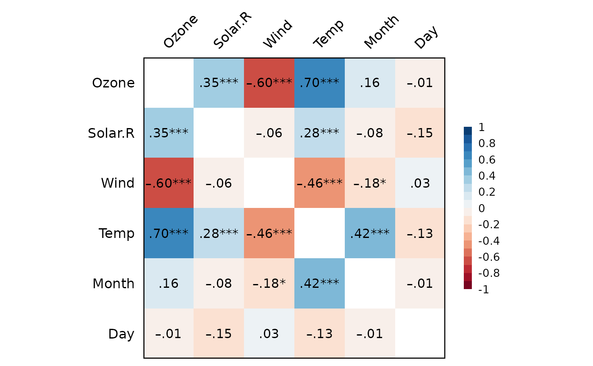

Correlation analysis.
Usage
Corr(
data,
method = "pearson",
p.adjust = "none",
all.as.numeric = TRUE,
digits = 2,
file = NULL,
plot = TRUE,
plot.r.size = 4,
plot.colors = NULL,
plot.file = NULL,
plot.width = 8,
plot.height = 6,
plot.dpi = 500
)Arguments
- data
Data frame.
- method
"pearson"(default),"spearman", or"kendall".- p.adjust
Adjustment of p values for multiple tests:
"none","fdr","holm","bonferroni", ... For details, seestats::p.adjust().- all.as.numeric
TRUE(default) orFALSE. Transform all variables into numeric (continuous).- digits
Number of decimal places of output. Defaults to
2.- file
File name of MS Word (
.doc).- plot
TRUE(default) orFALSE. Plot the correlation matrix.- plot.r.size
Font size of correlation text label. Defaults to
4.- plot.colors
Plot colors (character vector). Defaults to "RdBu" of the Color Brewer Palette.
- plot.file
NULL(default, plot in RStudio) or a file name ("xxx.png").- plot.width
Width (in "inch") of the saved plot. Defaults to
8.- plot.height
Height (in "inch") of the saved plot. Defaults to
6.- plot.dpi
DPI (dots per inch) of the saved plot. Defaults to
500.
Value
Invisibly return a list with
(1) correlation results from
psych::corr.test() and
(2) a ggplot2 object if plot=TRUE.
Examples
Corr(airquality)
#> Pearson's r and 95% confidence intervals:
#> ─────────────────────────────────────────────────
#> r [95% CI] p N
#> ─────────────────────────────────────────────────
#> Ozone-Solar.R 0.35 [ 0.17, 0.50] <.001 *** 111
#> Ozone-Wind -0.60 [-0.71, -0.47] <.001 *** 116
#> Ozone-Temp 0.70 [ 0.59, 0.78] <.001 *** 116
#> Ozone-Month 0.16 [-0.02, 0.34] .078 . 116
#> Ozone-Day -0.01 [-0.20, 0.17] .888 116
#> Solar.R-Wind -0.06 [-0.22, 0.11] .496 146
#> Solar.R-Temp 0.28 [ 0.12, 0.42] <.001 *** 146
#> Solar.R-Month -0.08 [-0.23, 0.09] .366 146
#> Solar.R-Day -0.15 [-0.31, 0.01] .070 . 146
#> Wind-Temp -0.46 [-0.57, -0.32] <.001 *** 153
#> Wind-Month -0.18 [-0.33, -0.02] .027 * 153
#> Wind-Day 0.03 [-0.13, 0.19] .739 153
#> Temp-Month 0.42 [ 0.28, 0.54] <.001 *** 153
#> Temp-Day -0.13 [-0.28, 0.03] .108 153
#> Month-Day -0.01 [-0.17, 0.15] .922 153
#> ─────────────────────────────────────────────────
#>

#> Correlation matrix is displayed in the RStudio `Plots` Pane.
#>
Corr(airquality, p.adjust="bonferroni",
plot.colors=c("#b2182b", "white", "#2166ac"))
#> Pearson's r and 95% confidence intervals:
#> p values and 95% CIs are adjusted using the "bonferroni" method.
#> ─────────────────────────────────────────────────
#> r [95% CI] p N
#> ─────────────────────────────────────────────────
#> Ozone-Solar.R 0.35 [ 0.08, 0.57] .003 ** 111
#> Ozone-Wind -0.60 [-0.75, -0.40] <.001 *** 116
#> Ozone-Temp 0.70 [ 0.53, 0.81] <.001 *** 116
#> Ozone-Month 0.16 [-0.11, 0.42] 1.000 116
#> Ozone-Day -0.01 [-0.28, 0.26] 1.000 116
#> Solar.R-Wind -0.06 [-0.29, 0.19] 1.000 146
#> Solar.R-Temp 0.28 [ 0.04, 0.48] .011 * 146
#> Solar.R-Month -0.08 [-0.31, 0.17] 1.000 146
#> Solar.R-Day -0.15 [-0.38, 0.09] 1.000 146
#> Wind-Temp -0.46 [-0.63, -0.25] <.001 *** 153
#> Wind-Month -0.18 [-0.40, 0.06] .412 153
#> Wind-Day 0.03 [-0.21, 0.26] 1.000 153
#> Temp-Month 0.42 [ 0.21, 0.60] <.001 *** 153
#> Temp-Day -0.13 [-0.35, 0.11] 1.000 153
#> Month-Day -0.01 [-0.24, 0.23] 1.000 153
#> ─────────────────────────────────────────────────
#>
#> Correlation matrix is displayed in the RStudio `Plots` Pane.
#> p values ABOVE the diagonal are adjusted using the "bonferroni" method.
#>
d = as.data.table(psych::bfi)
added(d, {
gender = as.factor(gender)
education = as.factor(education)
E = .mean("E", 1:5, rev=c(1,2), range=1:6)
A = .mean("A", 1:5, rev=1, range=1:6)
C = .mean("C", 1:5, rev=c(4,5), range=1:6)
N = .mean("N", 1:5, range=1:6)
O = .mean("O", 1:5, rev=c(2,5), range=1:6)
})
Corr(d[, .(age, gender, education, E, A, C, N, O)])
#> NOTE: `gender`, `education` transformed to numeric.
#>
#> Pearson's r and 95% confidence intervals:
#> ─────────────────────────────────────────────────────
#> r [95% CI] p N
#> ─────────────────────────────────────────────────────
#> age-gender 0.05 [ 0.01, 0.08] .012 * 2800
#> age-education 0.24 [ 0.21, 0.28] <.001 *** 2577
#> age-E 0.06 [ 0.03, 0.10] <.001 *** 2800
#> age-A 0.19 [ 0.15, 0.22] <.001 *** 2800
#> age-C 0.12 [ 0.08, 0.15] <.001 *** 2800
#> age-N -0.12 [-0.15, -0.08] <.001 *** 2800
#> age-O 0.08 [ 0.04, 0.12] <.001 *** 2800
#> gender-education 0.01 [-0.03, 0.05] .695 2577
#> gender-E 0.11 [ 0.07, 0.14] <.001 *** 2800
#> gender-A 0.21 [ 0.17, 0.24] <.001 *** 2800
#> gender-C 0.09 [ 0.06, 0.13] <.001 *** 2800
#> gender-N 0.12 [ 0.09, 0.16] <.001 *** 2800
#> gender-O -0.06 [-0.10, -0.02] .002 ** 2800
#> education-E 0.01 [-0.03, 0.05] .697 2577
#> education-A 0.05 [ 0.01, 0.08] .021 * 2577
#> education-C 0.02 [-0.02, 0.06] .305 2577
#> education-N -0.05 [-0.09, -0.01] .012 * 2577
#> education-O 0.11 [ 0.07, 0.14] <.001 *** 2577
#> E-A 0.46 [ 0.43, 0.49] <.001 *** 2800
#> E-C 0.26 [ 0.23, 0.30] <.001 *** 2800
#> E-N -0.22 [-0.26, -0.18] <.001 *** 2800
#> E-O 0.21 [ 0.18, 0.25] <.001 *** 2800
#> A-C 0.26 [ 0.22, 0.29] <.001 *** 2800
#> A-N -0.19 [-0.22, -0.15] <.001 *** 2800
#> A-O 0.15 [ 0.11, 0.18] <.001 *** 2800
#> C-N -0.23 [-0.27, -0.20] <.001 *** 2800
#> C-O 0.20 [ 0.16, 0.23] <.001 *** 2800
#> N-O -0.09 [-0.12, -0.05] <.001 *** 2800
#> ─────────────────────────────────────────────────────
#>
#> Correlation matrix is displayed in the RStudio `Plots` Pane.
#>